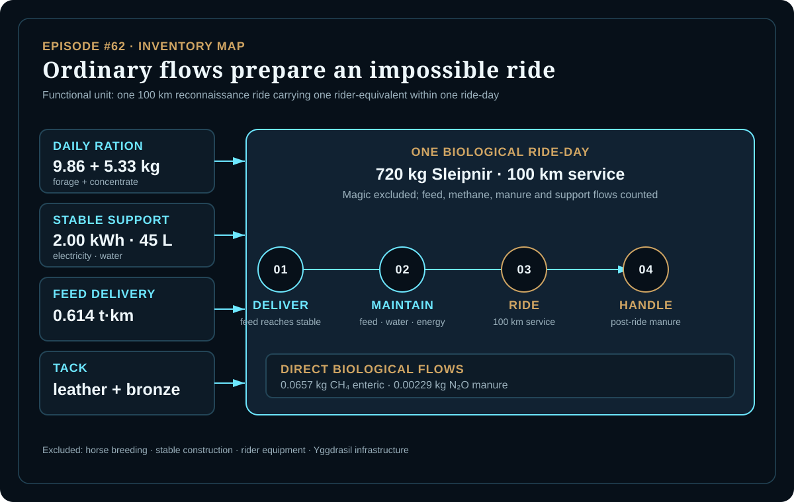
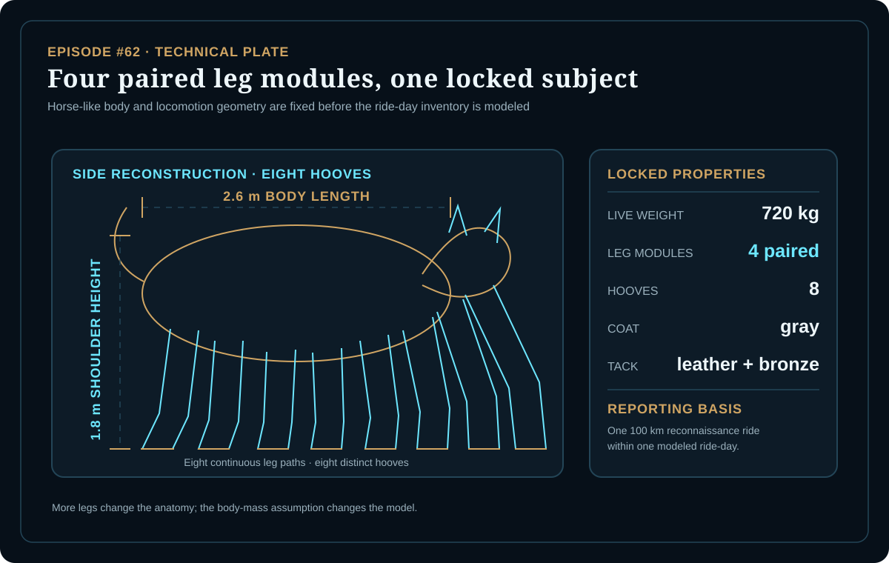
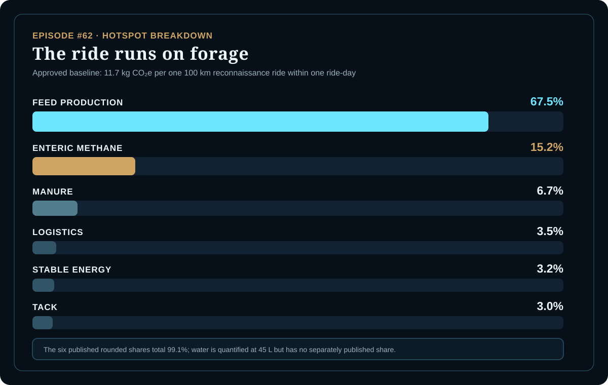

EPISODE #62 · MYTHS & LEGENDS
Sleipnir
What does an impossible mount emit when the fuel is biology?
THE SUBJECT
Mythic motion, modeled upkeep.
The approved episode freezes one horse-like subject before calculation: a 720 kg steel-gray stallion with a 2.6 m body length, a 1.8 m shoulder height, four paired leg modules, eight hooves and leather-and-bronze tack. The service is one 100 km reconnaissance ride by Odin's mount, not lifetime ownership of a divine animal.
The boundary counts feed production, enteric methane, manure CH₄ and N₂O, stable electricity and water, tack and feed delivery. Horse breeding, stable construction, rider equipment and Yggdrasil infrastructure are excluded. Supernatural propulsion and realm-crossing magic receive neither an emission flow nor a credit; the model ends when the ride-day is complete.
Physical reconstruction
720 kg live weight, 2.6 m body length, 1.8 m shoulder height and eight hooves across four paired leg modules.
Defined service
One 100 km reconnaissance ride carrying one rider-equivalent within one modeled ride-day.
Daily ration
9.86 kg of forage plus 5.33 kg of concentrate, scaled from the declared horse-feed study.
Main hotspot
Feed production contributes about 67.5% of the published ride-day footprint.
VISUAL MODEL
The ride begins before the first hoofbeat
The inventory map follows ordinary biological and stable-support flows through one ride-day; the technical plate records the anatomy and reference flow frozen before modeling.


DETAILED LIFE CYCLE INVENTORY
The biological ride-day ledger
Activity data and contribution shares reproduce the approved carousel. The published six rounded shares total 99.1%; the 45 L water flow has no separately published contribution share.
| Stage | Component / activity | Activity data | Climate change | Modelling basis |
|---|---|---|---|---|
| Feed production | Forage and concentrate ration | 9.86 kg forage + 5.33 kg concentrate | 67.5% published share | Scaled horse daily-diet study; Kuscu et al. 2024. |
| Biological metabolism | Enteric methane | 0.0657 kg CH₄ | 15.2% published share | IPCC default horse physiology proxy with the declared AR6 GWP100 factor family. |
| Manure management | Manure N₂O | 0.00229 kg N₂O | 6.7% published share | Declared nitrogen proxy with the stated IPCC / AR6 factor family. |
| Feed logistics | Rigid-HGV feed delivery | 0.614 t·km | 3.5% published share | DEFRA 2026 rigid-HGV freight plus WTT factor family. |
| Stable support | Stable electricity | 2.00 kWh | 3.2% published share | DEFRA 2026 electricity factor family. |
| Stable support | Water use | 45 L | Not separately disclosed | DEFRA 2026 water factor family; included in the published non-feed support subtotal. |
| Equipment | Leather and bronze tack | Material quantity not stated in the carousel | 3.0% published share | Declared DEFRA 2026 material-proxy families. |
| Approved baseline total | 11.7 kg CO₂e | Per one 100 km reconnaissance ride within one ride-day. | ||
Included
Feed production, enteric methane, manure CH₄ and N₂O, stable electricity and water, tack and feed freight.
Excluded
Horse breeding, stable construction, rider equipment and Yggdrasil infrastructure.
Published support subtotal
Electricity, water and freight together contribute 0.792 kg CO₂e in the approved episode.
Accounting rule
Magic moves the story but creates no modeled fuel flow; the cut-off event is completion of the ride-day.
HOTSPOT
The ride runs on forage
Feed production contributes 67.5% of the published baseline. Enteric methane follows at 15.2%; manure, logistics, stable energy and tack remain secondary.

Main result
11.7 kg CO₂e
Per one 100 km reconnaissance ride within one ride-day.
Feed production
67.5%
The dominant modeled ride-day flow.
Enteric methane
15.2%
The second-largest published contribution.
Non-feed support
0.792 kg CO₂e
Electricity, water and feed freight together.
Body-mass sensitivity
600 kg → 9.7 kg CO₂e
720 kg baseline → 11.7 kg CO₂e
850 kg → 13.8 kg CO₂e
Feed, methane and manure scale while all emission factors remain fixed.
Mass interpretation
A heavier canonical animal increases the ride-day footprint even before magic is considered. The published baseline remains the 720 kg case.
Feed-factor sensitivity
Low-feed EF → 9.71 kg CO₂e
Baseline → 11.7 kg CO₂e
High-feed EF → 13.7 kg CO₂e
Mass and boundary remain fixed while feed-production intensity changes by ±25%.
Feed interpretation
The uncertainty is not whether Sleipnir can run. It is what his feed represents. Feed remains the hotspot in both intensity cases.
Data status
DEFRA 2026 is prioritized where available. Horse feed uses Kuscu et al. 2024, while livestock physiology and greenhouse-gas characterization use declared IPCC-style proxies.
Published baseline rule
The short-horizon methane case is recorded in the workbook but is not used as the published baseline. No alternative value is introduced here.
THE VERDICT
Feed dominates.
Enteric methane follows.
Stable support remains visible.
Mass changes the ride.
A mythic ride can cross worlds and still begin in a field.